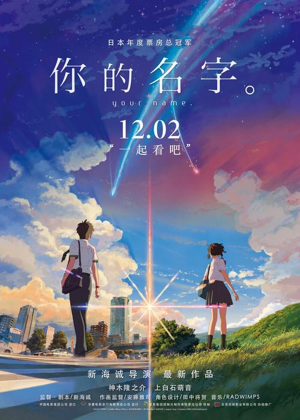
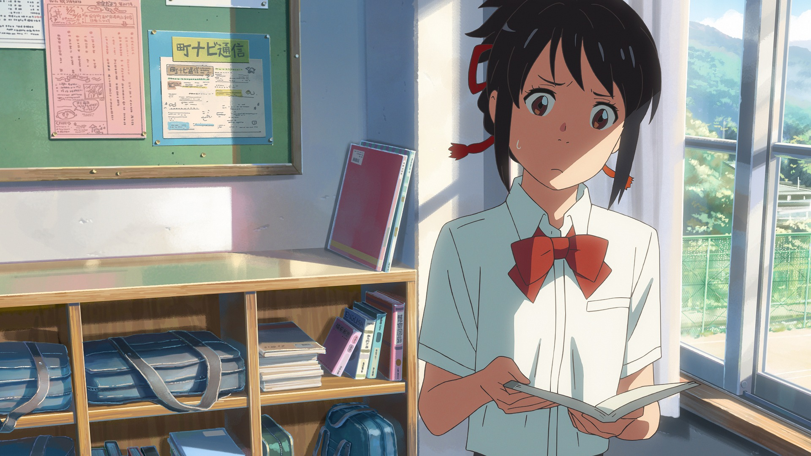

《你的名字。》
剧情简介
故事发生的地点是在每千年回归一次的彗星造访过一个月之前，日本飞驒市的乡下小镇糸守町。在这里女高中生三叶每天都过着忧郁的生活，而她烦恼的不光有担任镇长的父亲所举行的选举运动，还有家传神社的古老习俗。在这个小小的城镇，周围都只是些爱瞎操心的老人。为此三叶对于大都市充满了憧憬。
然而某一天，自己做了一个变成男孩子的梦。这里有着陌生的房间、陌生的朋友。而眼前出现的则是东京的街道。三叶虽然感到困惑，但是能够来到朝思暮想的都市生活，让她觉得神清气爽。另一方面在东京生活的男高中生立花泷也做了个奇怪的梦，他在一个从未去过的深山小镇中，变成了女高中生。两人就这样在梦中邂逅了彼此

获奖记录
- 第8届Newtype动画大奖 作品奖第一名。（剧场上映作品）（2016年10月09日）
- 第49回西班牙锡切斯・加泰罗尼亚国际电影节动画部门最优秀长篇作品奖。（2016年10月17日）
- 第18届韩国富川国际动画节长篇竞赛部门特别杰出奖和观众奖。（2016年10月25日）
- 第42届洛杉矶影评人协会奖最佳动画电影。
- 第40届日本电影学院奖优秀作品。[38] （2017年1月16日）

影片评价
震撼心灵，如风吹动了树木一般，内心深处沙沙作响。人总是在寻找某个人；人总是在等待某个人，命运总是令人焦急。而在新海诚的世界中，即使如此依然充满着希望
看片的时候，安托万·德·圣-埃克苏佩里（法国作家）的话——人最后总是会挂念，名为“希望”的病，数次在我脑中闪过。
新海诚的电影就像是勒内·马格里特的油画《比利牛斯山上城堡》，拥有者举世无双的说服力。《你的名字。》这部作品可以说是其集大成之作。然而导演岩井俊二感觉新海诚的“比利牛斯山上城堡”的境界要高得多。（岩井俊二（电影导演））
要凝聚多少思绪才能做出《你的名字。》这样的作品，歌手秦基博表示自己被深深震撼了。那是既感动又敬畏、难以用语言表达的复杂情感。他还表示看完电影后，一时无法言语，那种幻想与现实交织，把握得又如此平衡的感觉是如此震撼。（秦基博（歌手 曾为新海诚言叶之庭演唱主题曲））